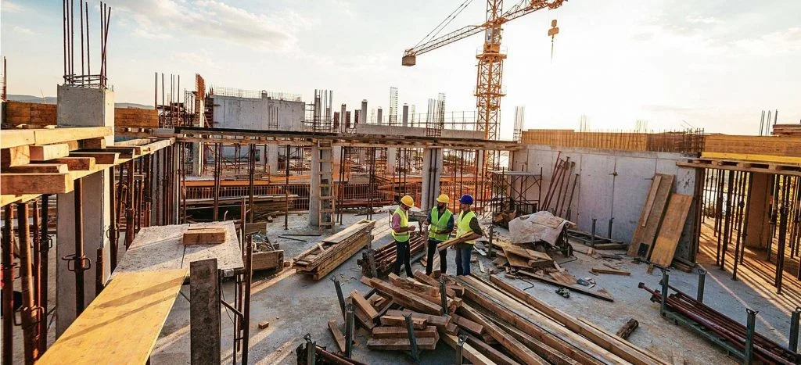

Gestão em Obras: Como Evitar Reivindicações por Atrasos e Problemas Estruturais
A gestão eficiente em obras é essencial para garantir a entrega no prazo e com a qualidade esperada. No entanto, atrasos e problemas estruturais são desafios comuns no setor da construção civil e podem gerar reivindicações judiciais que afetam a saúde financeira e a reputação da construtora.
Neste artigo, exploramos as principais causas desses problemas, como preveni-los por meio de boas práticas de gestão e contratos bem elaborados, além de destacar o papel fundamental da assessoria jurídica na proteção dos interesses da empresa. Continue a leitura para descobrir.

O impacto de atrasos e problemas estruturais na construção civil
Atrasos na entrega de obras e defeitos estruturais não prejudicam apenas o cronograma e os custos do projeto – eles também expõem a construtora a ações judiciais, multas contratuais e danos à reputação no mercado.
Exemplos de situações comuns que podem gerar reivindicações incluem:
– Atrasos na entrega de imóveis: Clientes que aguardam a conclusão da obra podem exigir indenização por perdas e danos, incluindo despesas com aluguel e lucros cessantes.
– Defeitos estruturais: Rachaduras, infiltrações, falhas elétricas ou hidráulicas podem levar a ações de responsabilidade civil para reparo dos danos ou compensações financeiras.
– Descumprimento de prazos com fornecedores ou parceiros: Pode gerar penalidades contratuais e até mesmo processos por quebra de contrato.
Principais causas de atrasos e problemas estruturais
Identificar as origens dos atrasos e falhas em obras é o primeiro passo para implementar uma gestão eficaz. As principais causas incluem:
1. Falhas no planejamento inicial
Cronograma mal estruturado.
Estimativas incorretas de prazos e recursos.
2. Problemas na gestão de fornecedores e materiais
Atraso na entrega de insumos.
Falta de controle de qualidade dos materiais utilizados.
3. Mão de obra não qualificada ou insuficiente
Falta de treinamento técnico.
Redução do quadro de profissionais em momentos críticos da obra.
4. Questões climáticas e imprevistos externos
Condições meteorológicas que impactam as etapas da construção.
Desafios em relação à logística e ao transporte de materiais.
5. Deficiências na fiscalização e no controle de qualidade
Insuficiência de vistorias técnicas durante as etapas da obra.
Falta de conformidade com as normas técnicas da ABNT (Associação Brasileira de Normas Técnicas).
Como se proteger contra reivindicações por atrasos e defeitos estruturais
Para evitar problemas e garantir a segurança jurídica, as construtoras devem adotar medidas preventivas e práticas de gestão estruturadas. Algumas estratégias fundamentais incluem:
- Planejamento detalhado e cronograma realista
Realizar um planejamento estratégico detalhado, com a definição de prazos e metas claras.
Incluir margens para imprevistos no cronograma.
- Controle rigoroso de fornecedores e insumos
Formalizar contratos com prazos definidos e cláusulas de responsabilidade.
Implementar um sistema de rastreamento de materiais para evitar desperdícios e garantir a qualidade.
- Investimento em mão de obra qualificada
Contratar profissionais especializados em cada fase do projeto.
Realizar treinamentos constantes para atualização e aprimoramento técnico.
- Monitoramento e fiscalização contínua
Adotar inspeções periódicas em todas as etapas da obra.
Implementar sistemas de gestão de qualidade para assegurar a conformidade com as normas técnicas.
- Elaboração de contratos claros e completos
Estabelecer cláusulas claras sobre prazos, responsabilidades e penalidades em caso de descumprimento.
Incluir dispositivos específicos para situações imprevistas, como eventos de força maior.
A importância de uma assessoria jurídica especializada
Mesmo com boas práticas de gestão, a complexidade legal do setor da construção civil exige a orientação de profissionais especializados. A assessoria jurídica oferece suporte em diversas áreas, garantindo que a construtora esteja amparada em todas as etapas do projeto.
Entre os principais benefícios da assessoria jurídica estão:
✔ Redução de riscos legais: Prevenção de litígios por meio da elaboração de contratos detalhados e em conformidade com a legislação.
✔ Resolução eficiente de conflitos: Intermediação em negociações para evitar a judicialização de problemas.
✔ Adequação às normas técnicas e regulatórias: Garantia de que a obra está em conformidade com a legislação vigente e as normas da ABNT.
✔ Defesa em ações judiciais: Atuação estratégica em processos relacionados a atrasos ou defeitos estruturais, minimizando prejuízos financeiros.
Conte com a expertise do Paulo Teodoro Advogados Associados
Com mais de 20 anos de experiência no mercado, o Paulo Teodoro Advogados Associados oferece assessoria jurídica especializada para construtoras, garantindo segurança jurídica em todas as fases da obra.
Nossa equipe está preparada para auxiliar sua empresa em:
– Elaboração e revisão de contratos de construção.
– Gestão de riscos jurídicos em obras.
– Defesa em ações judiciais por atrasos e defeitos estruturais
Clique aqui para entrar em contato conosco e proteger seu negócio com o suporte jurídico adequado!
- Eventos
- Artigos
- Saiba mais sobre o escritório ▸